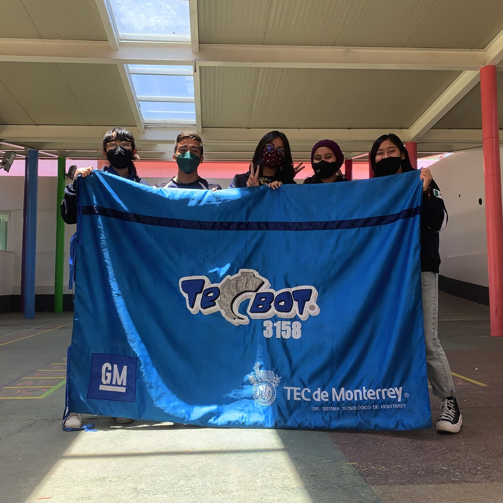

What is it about?

During the summer of 2022, I was informed that TECBOT (the first robotics team at Tec de Monterrey) was seeking people to assist in teaching a two-week robotics course using LEGO Mindstorms. Although I had limited experience with block programming, I watched a couple of videos and decided to take on the role of a tutor for five girls and five boys. My goal was to teach them everything they needed to know to program a robot that could follow a black line while avoiding three obstacles along its path.
In this project, the focus was not only on technical knowledge but primarily on finding ways to communicate the topics in a manner that would not bore the children. The educational aspect had more importance than the technical aspect, as it was crucial to engage the children and make the learning experience enjoyable for them. To achieve this, I incorporated interactive activities, games, and challenges into the curriculum to spark their curiosity and keep them motivated throughout the course. By creating a fun and engaging learning environment, we were able to effectively teach robotics concepts while ensuring the children remained enthusiastic and eager to learn.